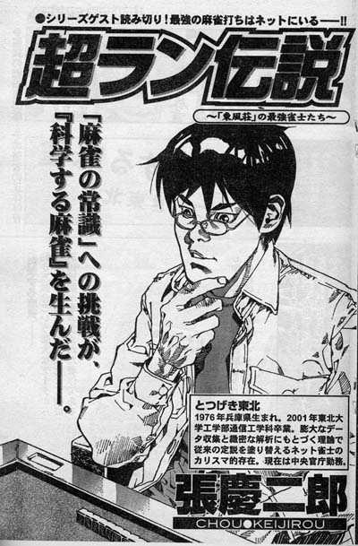
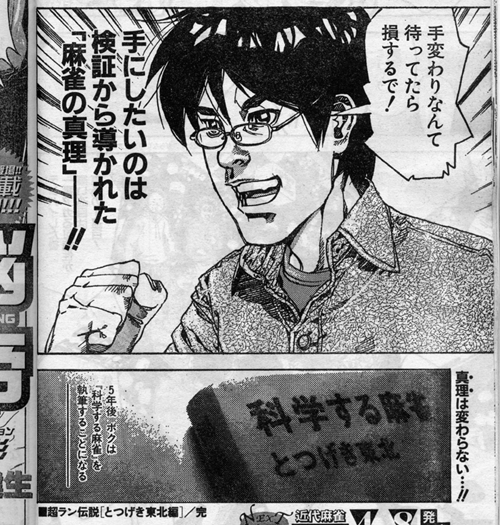
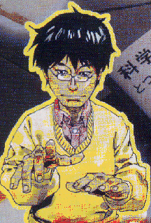
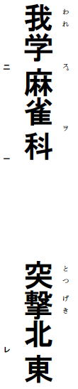
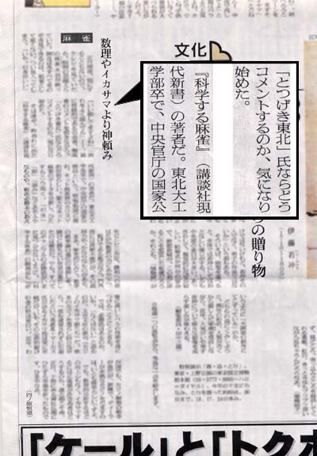
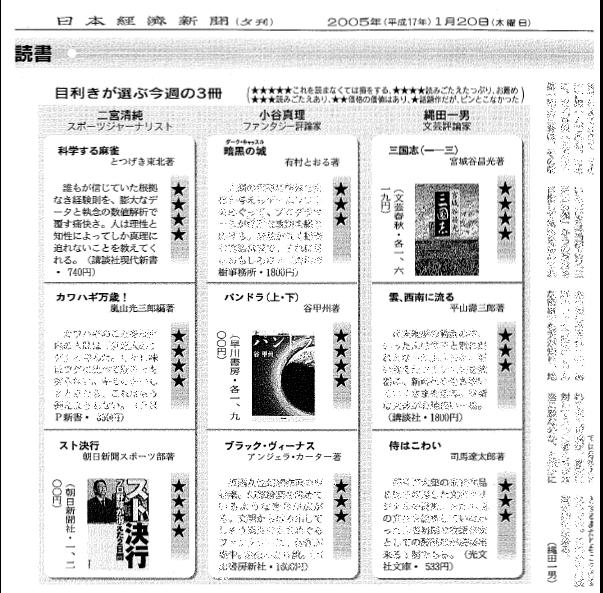
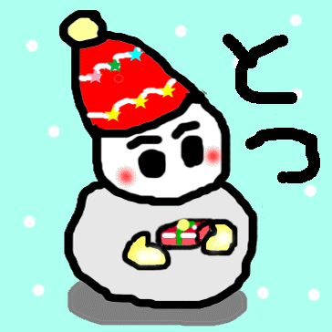

〜〜過去の雑記〜〜
15）03/08/25〜04/12/12分
14）03/03/13〜03/07/20分
13）03/01/20〜03/03/12分
12）02/09/30〜03/01/02分
11）02/07/08〜02/09/29分
10）02/01/07〜02/07/08分
９）01/08/30〜01/10/30分
８）01/06/20〜01/08/25分
７）01/05/09〜01/06/12分
６）01/03/02〜01/05/03分
５）01/02/06〜01/03/01分
４）00/12/30〜01/02/05分
３）00/12/22〜00/12/29分
２）00/12/14〜00/12/21分
１）00/11/24〜00/12/13分

05/03/08
張慶二郎先生の漫画

３月８日の近代麻雀オリジナルに、張慶二郎先生による「とつげき東北」漫画が掲載された。
「張慶二郎」という名前が「とつげき東北」の３０倍くらいの面積を取っており、なおかつ「ＣＨＯＵ●ＫＥＩＪＩＲＯＵ」などとローマ字にしてまでアピールされている点については、今後何かの機会に問い詰めようと思っている。
張先生は、打ち合わせの時にいきなり「ビールいいっすか」などと言い出すわんぱく先生である。
しかもわずか３時間の打ち合わせでビール６杯以上飲んでいた。
対抗して飲みまくったので人のことは言えないが、なにしにきてんねん(笑)。
上のコマにおいて私の目が若干イッているのは、まさに張先生が取材した時の私の目がそうだったからであろう。
そして張先生は、驚くほどトイレも行きまくっていた。
以後、ランダムに（確率的に）「おしっこ先生」などと呼んで参りたい。
漫画において、私がもっとも輝くのは下のコマである。

おまえはスト２のリュウか。
誰に対しこぶしをにぎりしめ叫んでるの！！(笑)
このダサかっこいいのが、まさに麻雀という世界なのだなぁとしみじみと実感した。
漫画描いていただいてありがとうございます！！

{kind=link}
（近代麻雀オリジナル４月号巻頭カラーより）
張先生、張先生！
なんで私がモヤモヤした黄色いオーラを出しつつ、手をゆっくりと前にかざしているのか、具体的にご説明いただきたい。
05/03/06
今日は肉の日
３月６日。今日は肉の日である。
別に理由などない。私が肉を食いたくなったからそう言っているだけである。
「一人焼肉」は、昨年末、彼女と別れてからの月例行事になっている。
友達がいないため、彼女がいなくなると、一人でいくしかないのである。
しかし否応なしに感じさせられるのは、「一人で焼肉屋に来る２８歳独身男性」に対する世間の冷たいまなざしだ。
さっそうと青いチャリをこいで焼肉屋に向かう（所要時間１０分）。
このとき、友達でもいれば話でもしながらのんびりとこれる。
しかし自分は孤高な一人のチャレンジャーなのだから、そんなことはせずに、全速力かつたちこぎでチャリを飛ばすわけだ。
焼肉屋につく。全力なのでハァハァと息も荒い。焼肉屋に入る。
焼肉屋店員「いらっしゃ……えっ！？」
不気味な男「どうも、はいれますか……ﾊｧﾊｧ」
焼肉屋店員「あの……何名様でしょうか」
不気味な男「……ﾊｧﾊｧ」（人差し指を立てる）
焼肉屋店員「お、お一人様ですね…♪ 少々お待ちください……（やべーのきたよ…帰れよ）」
・・・
焼肉屋店員「……ただいま満席となっております」
ストップ！
今ほんとに満席だった？ ねぇ、空いてる席あるみたいなんですけど！？
相席でもいいッス！ むしろ相席希望ッス！（迎合） ねぇ焼肉たべさせてぇぇぇ
焼肉屋店員「またのお越しをお待ちしております（フン、雑魚が）」
不気味な男「うぎゃあぁぁあああっ・・・！！ 残念！！！（超顔をしかめながら）」
焼肉屋店員「（なにっ！？ 「たまたま店に寄っただけだよ。別に焼肉なんて食いたくないし、いいよ」などと余裕のふりを見せるどころか、肉を食えぬ悲しみと怒りを、何のためらいもなく大胆かつ精細に表現している！？ できる・・・）」
不気味な男「またきます（すごすご）」
という流れで、今日は焼肉にいけず、一人寿司屋になった。ロンリーズシと名づけ、褒め称えたい。
言っておくが、私は焼肉は大好物だが寿司は別に好きではない。
せっかく駅まで出てきたのでしょうがなくどこかに入ろう、と思って入っただけである。
滑り止めの大学に嫌々いかされる気分である。
寿司は普通の味だったので、かに汁を頼んだ。
しばらくしてかに汁到着。
味噌汁に毛がにがどかっと入っている。
人目を気にすることなくかにのはさみで遊んでみる。
中に入っているスジをひっぱるとはさみがすこし閉じたりする。
「ほお、これらや筋肉を使って、かにたち（かにがに）は魚をはさむのであるなあ、高等生物め♪」
などとご満悦。
スシネタをはさませたりして「カニつえーカニ最強。20年間無敗」などと遊んでいたところ、かにのはさみで指切って血がだらだら出てきた。
バチがあたるとはまさにこのことである。
私はふと自分のしていることのダメさに気付き、帰路についた。
カニが最強であることを何度も何度も心に刻みつけながら……。
05/03/01
かわいそうな彼
職場の同期で、ものすごい忙しい部署に行かされた男がいる。
彼は「仕事だりー」「忙しいー」と常に言っており、死んだ魚の目をしていた。
３日連続で朝４時まで残業ともなると、そうなるのもうなずける。
おれが妙にハイテンションで
「めしくいにいかへん？ ふははは」
と電話しても、
「また・・・な」
などというシリアスな返事しか返ってこないことが多い。
しかしある時から、彼の目が輝きを取り戻し、ものすごく元気になった。
めしに誘った場合の返事も、「いくか！！！！！！！」などと必要以上に激しくなっている。
彼の身に何が起こったのか？ 新しい楽しみでも見出したのか？
「最近楽しいことを見つけてね」
ほう。それは何だ？ 女か？ 夢か？
「いやいや。そういうんじゃないよ」
いったい何だろうか。
めしを食い終わったあとにコンビニに寄った。
すると、彼は一目散にアメの置いてあるコーナーへ向かう。
陳列されているアメをしげしげと見つめながら彼は言った。
「アメって……楽しいよぉ。最高だ。」
…！？
目が輝いてしまっている！
いい目をしている……。
こ、この男、できる！
アメを選択し、食うということに人生の楽しみの全てを見出してやがるというのかッ！
リンゴ味のにするか、紅茶味のにするかで５分以上迷っていた。
「どっちでもええわ。はよしろ」と言いたかったが、オノのようなもので殴られて死ぬ可能性（10％前後）を考慮してやめた。
「紅茶味って最初おいしいけど、１袋食うと飽きるのよね。でもこのリンゴのも割とそうなんだよね」
そこ。場合わけの必要などない。
１袋食ったら、味と独立に確実に飽きることに気付け。
もう一度言う。
同じ種類のアメを１袋食うことは、食い飽きた状態にわれわれを誘う（いざなう）ことに気付け。
なに軽くいざなわれとんねん。アメごときに。
「変化を考えて、色々な味が楽しめるこれにしよう」（と言ってフルーツミックスにする）
５分迷っとったのにあっさり紅茶とリンゴを切るな！
おれの５分の待ちは何！？
しかしアメに飽きたらどうするんだろう彼は(笑)
じきに飽きることが予想される。今度はガムか？(笑)
「最近さぁ、ガムにしてる」
やはりか！！！！
05/02/11
名古屋へ
名古屋にいってきた。バイマンキン（予備校時代からの友達）と久々にあった。
まずしたことはゲーセンでハイパースト２（基本）。
過去県大会に出場した（してしまった）バイマンとは言え、私の相手にはならないので数戦で終了。
ゲーセンの雑魚どもが数回対戦してきたが全勝にて蹴散らす。
自分の強さに自分の中で盛り上がって、
「うぬらの無力さ、その体で知れい！」
などと豪鬼の真似をして口にだしてみたものの、バイマンのリアクションが「え・・・？」レベルであり、２８歳男性としてこれ以上にないほど恥をかいた。
んで、その後向かったのはボーリング。
事前に、
「ピン20くらい？」
「ピンピンは？」
「ちょっと高いな。ひさしぶりだしピン50で」
「ウマは？」
「なしでいいや」
などという、ボーリングらしからぬ会話が飛び交う。
むろん、スコア１ピン差あたりいくら（何ガバス）支払うかという取り決めの会話である。
当然私は公務員であるから、金銭を賭けた賭博行為をしているわけではない。
あくまでも賭けるのはプライドやガバス等である。
ボーリングはひさびさだったが好調で、超ついており１９０近くとれた。
ちなみに適宜ストライクの位置を並べ替えると、スコアは１４０などにも低下し得ることを確認した。
運ゲームマンセー。
おかげで医者などという汚い商売（妬みからくるイメージ）でガバスをぼろ儲けをしているバイマンから、ガバスを充分に奪い取ることができた。
気になったのはストライクを取ったときにスコアボードに表示されるルーレットである。
しばしば、いくつかのボーリング場では「７７７」が揃うとゲーム代無料券などがもらえる。
ところが、われわれの行ったボーリング場においては、「７７７」が揃ったにもかかわらず、「ラッキー！」と表示されるだけで、その結果がそれ以外のいかなる現象にも影響を与えないのである！
なんでやねん。
なにお前がラッキーと言ってくれることのみが、ラッキーたるゆえんの全てになってもうてんねん。
明らかにラッキーではないわ。
その後飲み屋にいって散々語り散らして解散。
みそカツは相変わらずいまいちでした。
05/01/29
漢文
中国の麻雀のルールを学び、中国麻雀を科学して売り出せば、大ヒット間違いなし！
しかし大陸の人々は、日本文化への理解を示さないことが以前の日記でも明らかになっている（03/09/26の日記参照）。
きっと、中国で本が発売されてもこんなタイトルになるだろう。

たのむから名前にレ点はやめろ。
05/01/20
記事想定？

{kind=link}
{kind=link}
（左：05/01/08朝日新聞夕刊10面、四ノ原恒憲氏の記事「数理やイカサマより神頼み」より）
（右：05/01/20日本経済新聞夕刊14面、二宮清純氏の書評より）
全国紙で「とつげき東北」は、ややまずいのではないか？
特に左。記者の方が、「とつげき東北」と括弧書きした時の葛藤は想像に余りある。
もっとかっこいい名前にしとけばよかった。
（いや、うれしいんですけどね！）
05/01/01
新年
あけましておめでとうございます。
とはいっても、これを書いているのが1月9日なわけですが。
ポストを見たら、恐ろしいことに、年賀状が数枚入ってました。
無言で「早く返事をだしてはやくおそいまだ」との圧力をかけてくるこの紙切れ。
実に怖い世の中です。
年賀状は権力です。
カルテル、トラスト、コンツェルンです。カルテルです（２回言った！）。
…あれですよ。アフリカの恵まれない子供たちのことを考えて、こう、お祝いとかはやめようとね。
ほら、おれって人間的に優れてるぅ☆
04/12/28
増刷！
おかげさまで、増刷が決まりました。
ご購入いただいた皆様、ありがとうございます！
一部、やや難しいという感想がありますが、難しい部分については読み飛ばしながら、サクサクと進んでみてください！
04/12/25
メリークリスマス。

あまりにも何のイベントも発生しない、暇なクリスマスだったため、絵を描いてみました。
私の代表的な友達はボールやでんきもうふ等ですが、まだボールを彼女にする勇気がありません。
04/12/17
出版！
とつげき東北著『科学する麻雀』講談社現代新書、ようやく刊行です。